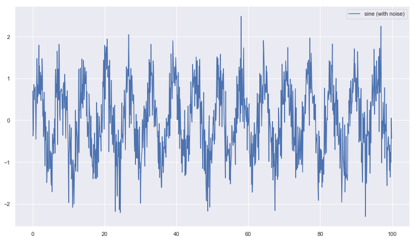
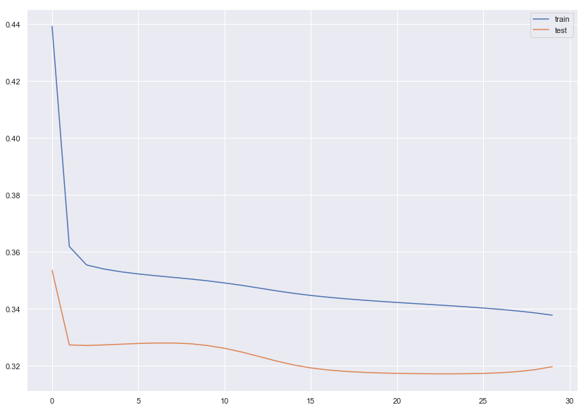
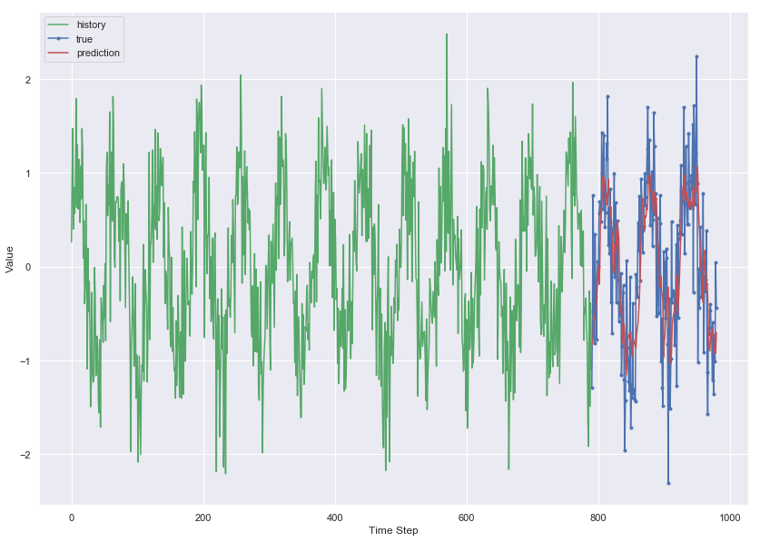
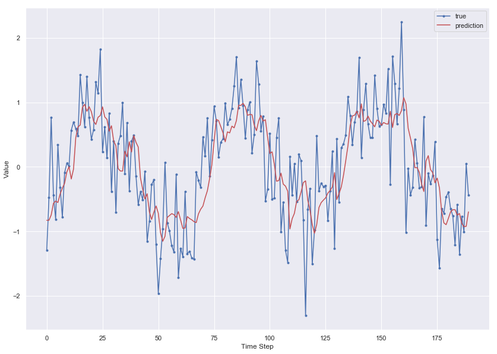

LSTM-Introduction
For classifying MNIST digits.
Intall Tensorflow
#pip install tensorflow==2.0.0-beta0
#pip install --upgrade tensorflow==2.0.0-beta0
import tensorflow as tf
from tensorflow import keras # tf.keras
import seaborn as sns
import matplotlib as mpl
import matplotlib.pyplot as plt
import numpy as np
import os
import pandas as pd
import sklearn
import sys
import time
sns.set()
%matplotlib inline
%load_ext tensorboard
The tensorboard extension is already loaded. To reload it, use:
%reload_ext tensorboard
print("python", sys.version)
for module in mpl, np, pd, sklearn, tf, keras:
print(module.__name__, module.__version__)
python 3.7.1 (default, Dec 14 2018, 13:28:58)
[Clang 4.0.1 (tags/RELEASE_401/final)]
matplotlib 3.0.2
numpy 1.15.4
pandas 0.23.4
sklearn 0.20.1
tensorflow 2.0.0-beta0
tensorflow.python.keras.api._v2.keras 2.2.4-tf
Load data
time = np.arange(0, 100, 0.1)
sin = np.sin(time) + np.random.normal(scale=0.5, size=len(time))
plt.figure(figsize = [14,8])
plt.plot(time, sin, label='sine (with noise)');
plt.legend();

df = pd.DataFrame(dict(sine=sin), index=time, columns=['sine'])
df.head()
| sine | |
|---|---|
| 0.0 | 0.699236 |
| 0.1 | -0.377399 |
| 0.2 | -0.200619 |
| 0.3 | 0.851897 |
| 0.4 | 0.487359 |
train_size = int(len(df) * 0.8)
test_size = len(df) - train_size
train, test = df.iloc[0:train_size], df.iloc[train_size:len(df)]
print(len(train), len(test))
800 200
def create_dataset(X, y, time_steps=1):
Xs, ys = [], []
for i in range(len(X) - time_steps):
v = X.iloc[i:(i + time_steps)].values
Xs.append(v)
ys.append(y.iloc[i + time_steps])
return np.array(Xs), np.array(ys)
time_steps = 10
# reshape to [samples, time_steps, n_features]
X_train, y_train = create_dataset(train, train.sine, time_steps)
X_test, y_test = create_dataset(test, test.sine, time_steps)
print(X_train.shape, y_train.shape)
(790, 10, 1) (790,)
Model
model = keras.models.Sequential([
keras.layers.LSTM(units=128,\
input_shape=(X_train.shape[1],X_train.shape[2])),
keras.layers.Dense(units=1)
])
model.compile(
loss='mean_squared_error',
optimizer=keras.optimizers.Adam(0.001)
)
history = model.fit(
X_train, y_train,
epochs=30,
batch_size=16,
validation_split=0.1,
verbose=1,
shuffle=False
)
Train on 711 samples, validate on 79 samples
Epoch 1/30
711/711 [==============================] - 1s 2ms/sample - loss: 0.4392 - val_loss: 0.3535
Epoch 2/30
711/711 [==============================] - 0s 478us/sample - loss: 0.3619 - val_loss: 0.3273
Epoch 3/30
711/711 [==============================] - 0s 482us/sample - loss: 0.3554 - val_loss: 0.3271
Epoch 4/30
711/711 [==============================] - 0s 497us/sample - loss: 0.3540 - val_loss: 0.3273
Epoch 5/30
711/711 [==============================] - 0s 462us/sample - loss: 0.3530 - val_loss: 0.3276
Epoch 6/30
711/711 [==============================] - 0s 460us/sample - loss: 0.3522 - val_loss: 0.3278
Epoch 7/30
711/711 [==============================] - 0s 459us/sample - loss: 0.3516 - val_loss: 0.3280
Epoch 8/30
711/711 [==============================] - 0s 474us/sample - loss: 0.3511 - val_loss: 0.3280
Epoch 9/30
711/711 [==============================] - 0s 470us/sample - loss: 0.3505 - val_loss: 0.3277
Epoch 10/30
711/711 [==============================] - 0s 470us/sample - loss: 0.3498 - val_loss: 0.3271
Epoch 11/30
711/711 [==============================] - 0s 481us/sample - loss: 0.3491 - val_loss: 0.3261
Epoch 12/30
711/711 [==============================] - 0s 468us/sample - loss: 0.3482 - val_loss: 0.3248
Epoch 13/30
711/711 [==============================] - 0s 463us/sample - loss: 0.3473 - val_loss: 0.3233
Epoch 14/30
711/711 [==============================] - 0s 452us/sample - loss: 0.3463 - val_loss: 0.3217
Epoch 15/30
711/711 [==============================] - 0s 464us/sample - loss: 0.3454 - val_loss: 0.3203
Epoch 16/30
711/711 [==============================] - 0s 468us/sample - loss: 0.3447 - val_loss: 0.3192
Epoch 17/30
711/711 [==============================] - 0s 473us/sample - loss: 0.3441 - val_loss: 0.3185
Epoch 18/30
711/711 [==============================] - 0s 472us/sample - loss: 0.3435 - val_loss: 0.3180
Epoch 19/30
711/711 [==============================] - 0s 468us/sample - loss: 0.3431 - val_loss: 0.3177
Epoch 20/30
711/711 [==============================] - 0s 478us/sample - loss: 0.3426 - val_loss: 0.3175
Epoch 21/30
711/711 [==============================] - 0s 488us/sample - loss: 0.3422 - val_loss: 0.3173
Epoch 22/30
711/711 [==============================] - 0s 489us/sample - loss: 0.3419 - val_loss: 0.3172
Epoch 23/30
711/711 [==============================] - 0s 483us/sample - loss: 0.3415 - val_loss: 0.3172
Epoch 24/30
711/711 [==============================] - 0s 477us/sample - loss: 0.3411 - val_loss: 0.3172
Epoch 25/30
711/711 [==============================] - 0s 476us/sample - loss: 0.3407 - val_loss: 0.3172
Epoch 26/30
711/711 [==============================] - 0s 470us/sample - loss: 0.3403 - val_loss: 0.3173
Epoch 27/30
711/711 [==============================] - 0s 481us/sample - loss: 0.3398 - val_loss: 0.3175
Epoch 28/30
711/711 [==============================] - 0s 477us/sample - loss: 0.3392 - val_loss: 0.3179
Epoch 29/30
711/711 [==============================] - 0s 488us/sample - loss: 0.3386 - val_loss: 0.3186
Epoch 30/30
711/711 [==============================] - 0s 478us/sample - loss: 0.3378 - val_loss: 0.3197
Evaluation
plt.figure(figsize=[14,10])
plt.plot(history.history['loss'], label='train')
plt.plot(history.history['val_loss'], label='test')
plt.legend();

y_pred = model.predict(X_test)
plt.figure(figsize=[14,10])
plt.plot(np.arange(0, len(y_train)), y_train, 'g', label="history")
plt.plot(np.arange(len(y_train), len(y_train) + len(y_test)), y_test, marker='.', label="true")
plt.plot(np.arange(len(y_train), len(y_train) + len(y_test)), y_pred, 'r', label="prediction")
plt.ylabel('Value')
plt.xlabel('Time Step')
plt.legend()
plt.show();

plt.figure(figsize=[14,10])
plt.plot(y_test, marker='.', label="true")
plt.plot(y_pred, 'r', label="prediction")
plt.ylabel('Value')
plt.xlabel('Time Step')
plt.legend()
plt.show();
